Michaels
WebRadio
Live radiostreaming til alle dine enheder
Brugervejledning
Alt hvad du skal vide for at komme i gang
Version juli 2026
webradio-chi.vercel.app
♫ ♪ ♫ ♪ ♫ ♪
Indholdsfortegnelse
- 1Hvad er WebRadio?3
- 2Åbn appen3
- 3Afspil en radiostation4
- 4Kategorier — find din musikstil5
- 5Favoritter6
- 6Lydstyrke6
- 7Afspil på Sonos7
- 8Søvntimer8
- 9Import og eksport af stationer9
- 10Tilføj en ny station10
- 11Slet en station10
- 12Sorter stationer efter eget valg11
- 13Brug på iPhone og iPad11
- 14Installer appen på hjemskærmen12
OM DENNE VEJLEDNING
Denne vejledning er skrevet til dig, der aldrig har brugt WebRadio før.
Du behøver ikke teknisk viden — følg blot trinnene, og du lytter til din yndlingsradio
inden for få minutter. Appen fungerer i alle moderne browsere og på iPhone.
Michaels WebRadio er en gratis webside, der samler over 70 live radiostationer på ét sted. Du kan lytte til alt fra 70'er-hits og 80'er-pop til dansk radio, dance og rock — direkte i din browser, uden at downloade noget som helst.
🎵
Over 70 stationer
Musik fra 9 kategorier — noget for enhver smag
📱
Virker overalt
PC, Mac, iPhone og iPad — ingen download nødvendig
❤️
Dine favoritter
Gem dine yndlingsstationer og find dem hurtigt
🌙
Søvntimer
Sluk automatisk efter 10, 20, 30 eller 60 minutter
Du åbner WebRadio ved at skrive adressen i din browsers adresselinje — eller klik på et bogmærke, hvis du har gemt det.
🌐
webradio-chi.vercel.app
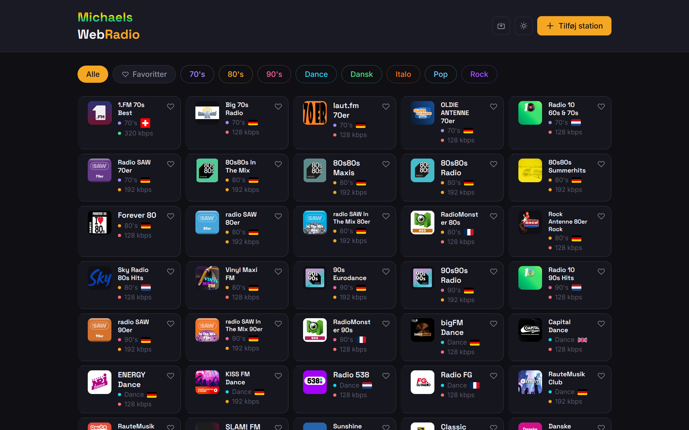
Sådan ser WebRadio ud, når du åbner den — alle stationer vises straks.
Knapperne øverst til højre
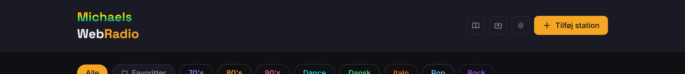
Fra venstre: Brugervejledning, Import/Eksport, Lys/Mørk tilstand og Tilføj station.
Brugervejledning — åbner denne guide
Import / Eksport — gem eller gendan din stationsliste (se kapitel 8)
Lys / Mørk tilstand — skift mellem mørkt og lyst tema
Det er meget enkelt at starte afspilning — ét enkelt klik er alt hvad der skal til.
1
Find den station du vil lytte til i gitteret af stationskort.
2
Klik én gang på kortet — afspilning starter øjeblikkeligt.
3
En gul prik ● Forbinder vises i bunden, mens streamen kobler op. Efter få sekunder skifter den til rød prik ● Live.
Et stationskort viser stationens navn, kategori, flag og bitrate (lydkvalitet). Klik for at afspille — hold hjerteikonet for at gemme som favorit.
Pausér og genoptag
Når en station afspiller, vises en afspilningsbar i bunden af skærmen. Her kan du pausere og genoptage med den store knap til højre.
Bemærk: WebRadio sender live — du kan ikke spole frem eller tilbage. Når du genoptager efter en pause, forbindes du direkte til det aktuelle live-tidspunkt.
Hvad viser afspilningsbaren?
Stationsnavn og logo
Den aktive station vises med navn, kategori-mærke og bitrate (fx 192 kbps)
Lyttetimer
Tæller kun aktiv lyttetid — pauser med dig og nulstilles ved ny station
Sangtitel
Mange stationer sender aktuel sangtitel — vises automatisk hvis tilgængelig
Live-status
● Live = afspiller ● Forbinder = kobler op
Øverst på siden finder du en række farverige knapper — en for hver musikstil. Klik på en kategori for kun at se stationer inden for den genre.

Kategorirækken øverst. Klik på en kategori for at filtrere stationerne.
WebRadio har 9 kategorier:
🎵 70's
🎵 80's
🎵 90's
💃 Dance
🇩🇰 Dansk
🇮🇹 Italo
🎄 Jul
🎤 Pop
🎸 Rock
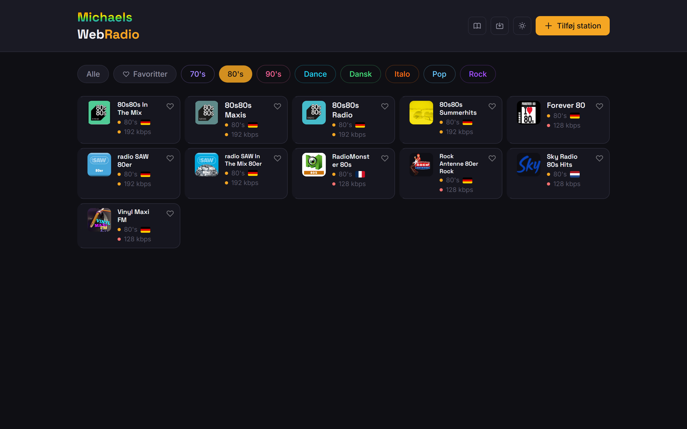
80's — kun 80'er-stationer vises
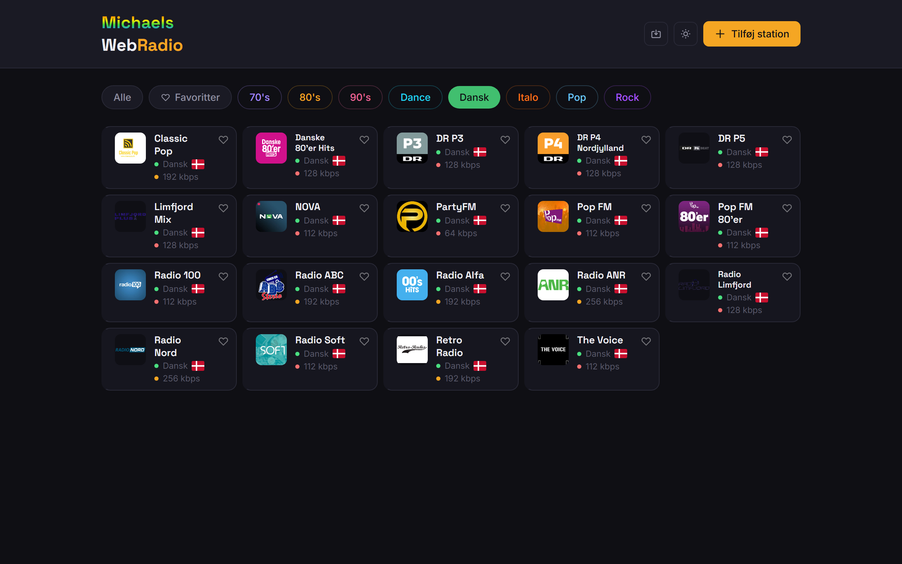
Dansk — kun danske stationer
Tip: Jul-kategorien vises kun i december og januar — den gemmes automatisk resten af året.
Gem dine yndlingsstationer som favoritter, så du hurtigt kan finde dem igen.
Tilføj til favoritter
1
Find stationskortet du vil gemme.
2
Klik på hjerteikonet ♡ øverst til højre på kortet.
3
Hjertet farves rødt ❤️ — stationen er nu gemt som favorit.
Se dine favoritter
Klik på knappen ♡ Favoritter øverst i kategorirækken for kun at se dine gemte stationer.
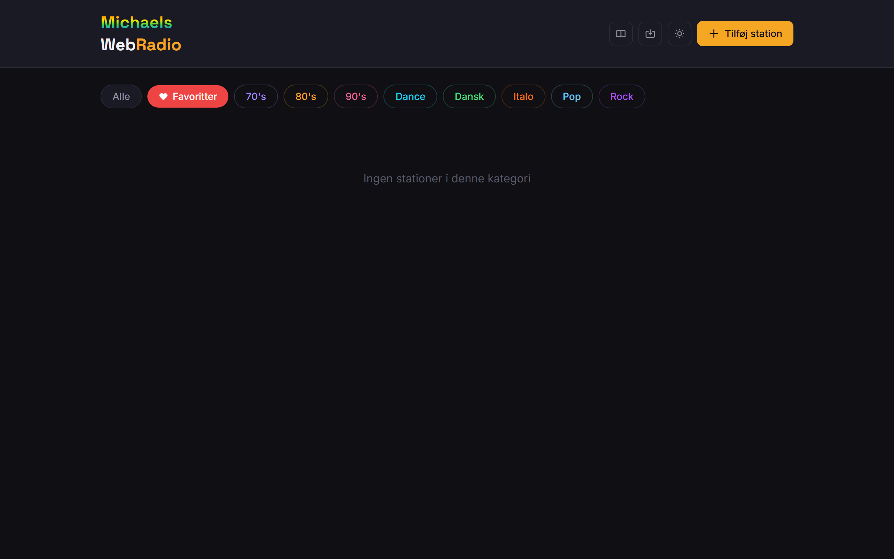
Klik "Favoritter" i kategorirækken for at se dine gemte stationer.
Tip: Dine favoritter er personlige og gælder kun din enhed — de påvirker ikke andres visning.
Lydstyrken styres med skyderen i afspilningsbaren (den midterste række).
iPhone/iPad: Lydstyrke-skyderen vises ikke på iOS — brug i stedet enhedens egne lydstyrkeknapper på siden af telefonen.
Har du Sonos-højtalere derhjemme, kan du sende den station du lytter til direkte over på en af dem — så fylder musikken hele rummet i stedet for kun din telefon eller computer.
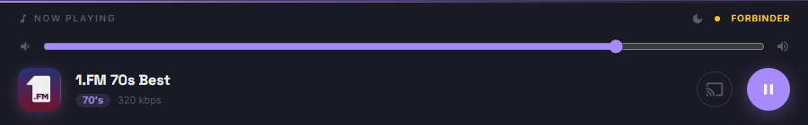
Sonos-ikonet (skærm-symbolet) findes i afspilningsbaren, til venstre for play/pause-knappen.
Send en station til Sonos
1
Start afspilning af den station du vil høre.
2
Klik på Sonos-ikonet i afspilningsbaren — en menu med dine rum åbner.
3
Klik på rumnavnet (fx Bad) eller play-ikonet ▶ ved siden af — begge starter afspilning i det valgte rum.
4
En besked bekræfter at kaldet er sendt — det kan tage 5-10 sekunder før musikken rent faktisk starter på højtaleren.
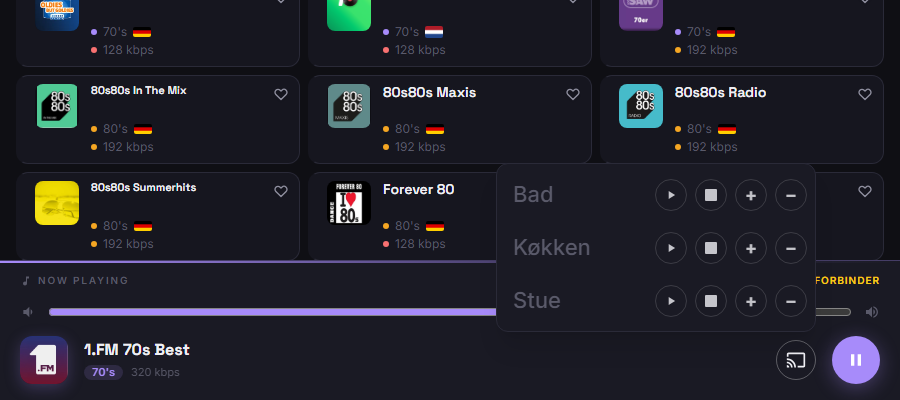
Sonos-menuen viser hvert rum med fire knapper: ▶ afspil, ■ stop, + og − til lydstyrke.
Bemærk: Når du sender musik til Sonos, sættes den lokale afspilning i browseren automatisk på pause — så du ikke hører stationen to steder på samme tid.
Styr volumen og stop
I samme menu kan du justere hver højtaler uden at skulle bruge en anden app:
+ / − lydstyrke
Justerer volumen på den valgte Sonos-højtaler i små trin
■ Stop
Stopper afspilningen på den valgte højtaler
Tip: Nogle stationer bruger en streamtype (HLS) som Sonos ikke understøtter — for dem er Sonos-ikonet gråt og deaktiveret.
Søvntimeren slukker automatisk for musikken, når den indstillede tid er gået. Perfekt hvis du vil falde i søvn til radio.
1
Start afspilning af en station.
2
Klik på måne-ikonet 🌙 i øverste højre hjørne af afspilningsbaren.
3
Vælg varighed: 10 min 20 min 30 min 60 min
4
En nedtæller vises ved siden af ikonet (fx 30m).
5
Når tiden udløber, standser musikken og du ser: "Sov godt 🌙"
EKSEMPEL — AFSPILNINGSBAR MED SØVNTIMER
Now Playing
🌙 30m
Live
00:42
Sluk søvntimeren igen
Klik på måne-ikonet og vælg Fra øverst i menuen — timeren annulleres øjeblikkeligt.
Tip: Skifter du til en ny station mens søvntimeren kører, nulstilles nedtællingen automatisk — du får den fulde tid med den nye station.
Import/Eksport-funktionen lader dig tage en sikkerhedskopi af alle stationer eller flytte dem til en anden enhed. Klik på upload/download-ikonet øverst til højre i headeren.
Eksport — gem din stationsliste
1
Klik på Import/Eksport-ikonet i headeren.
2
Vælg fanen Eksport — den er valgt som standard.
3
Klik Download JSON-fil — en fil med alle stationer downloades til din computer.
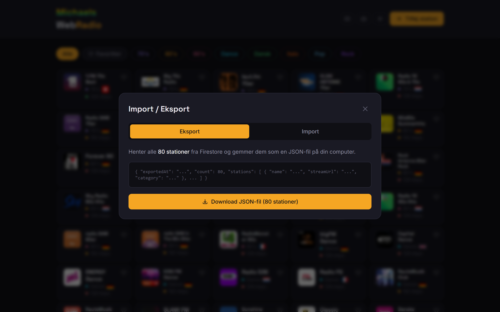
Eksport-fanen viser antallet af stationer og en forhåndsvisning af filformatet.
Import — indlæs stationer fra fil
1
Klik på Import/Eksport-ikonet og vælg fanen Import.
2
Klik Vælg JSON-fil og find den fil du tidligere eksporterede.
3
Appen viser en liste over stationer i filen med ✓ gyldig eller ✗ fejl for hver.
4
Klik Importer gyldige stationer — dubletter springes automatisk over.
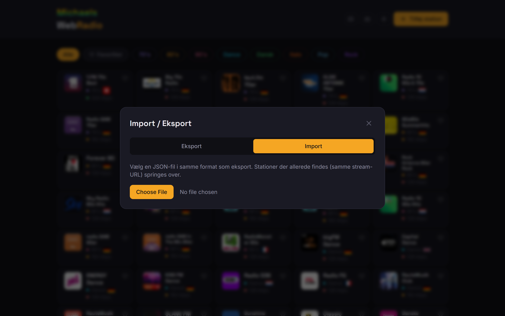
Import-fanen validerer stationerne inden import og viser hvilke der er gyldige.
Tip: Eksportér din stationsliste jævnligt som backup — så kan du nemt gendanne den, hvis du skifter browser eller enhed.
Du kan tilføje egne radiostationer, hvis du kender stream-adressen (typisk en URL der slutter på .mp3 eller /stream).
1
Klik på den gule + Tilføj station-knap øverst til højre.
2
Udfyld formularen: Navn, Stream-URL, Kategori og evt. bitrate.
3
Klik Tilføj — stationen vises straks i gitteret.
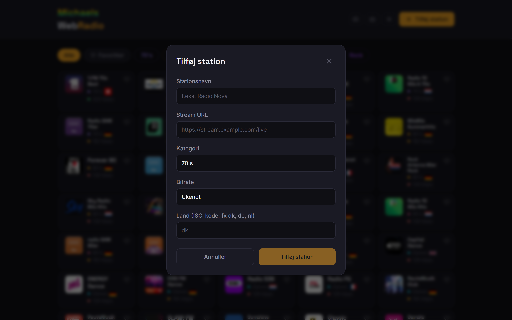
Formularen til at tilføje en ny station. "Navn" og "Stream-URL" er obligatoriske.
Bemærk: Tilføjede stationer er synlige for alle enheder — de gemmes i den fælles database.
For at undgå utilsigtede sletninger er funktionen gemt bag en long-press — der er ingen slet-knap synlig på kortet.
1
Hold fingeren/musen nede på stationskortet i 2 sekunder uden at bevæge dig.
2
En bekræftelsesdialog åbner.
3
Klik Slet for at bekræfte — eller Annuller for at fortryde.
Tip: Sletning fjerner stationen for alle enheder. Har du slettet ved en fejl, skal den tilføjes manuelt igen — eller gendannes via Import (kapitel 8).
Du kan selv bestemme rækkefølgen af stationerne inden for en kategori ved at trække og slippe dem.
1
Vælg en specifik kategori (fx "80's") — sortering virker ikke i "Alle" eller "Favoritter".
2
Hold nede i 250ms på et kort og bevæg straks — kortet løftes og kan trækkes.
3
Træk kortet til den ønskede position og slip.
4
Rækkefølgen gemmes automatisk og huskes næste gang.
Bemærk: Sorteringsrækkefølgen er personlig og gælder kun din enhed.
Låseskærm og CarPlay
Stationsnavn og logo vises på låseskærmen og i bilens CarPlay. Du kan styre play/pause herfra.
Bluetooth-frakobling
Tager du høretelefoner ud, standser musikken. Sætter du dem i igen inden 10 sek, genoptages den automatisk.
Lydstyrke
Brug iPhones fysiske lydstyrkeknapper — skyderen vises ikke på iOS.
Baggrundsafspilning
Musikken fortsætter, selv om du skifter app eller slukker skærmen.
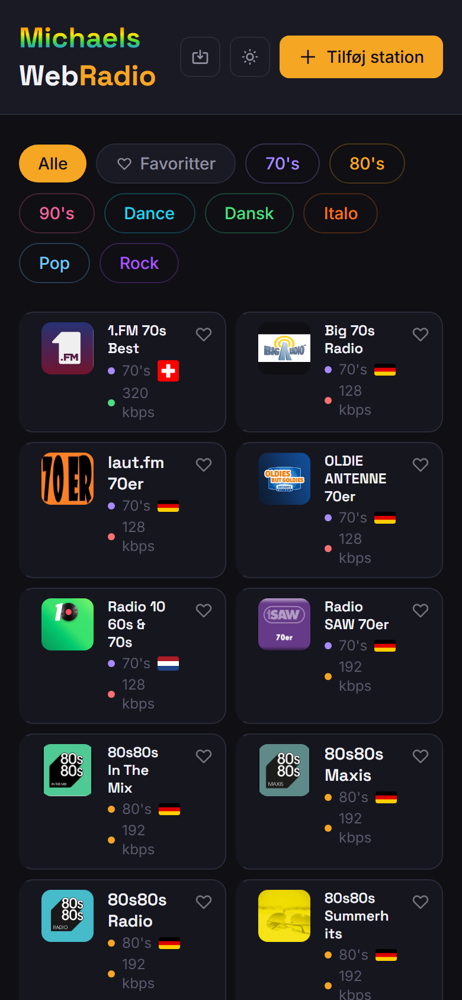
WebRadio på iPhone — tilpasset til lille skærm
På iPhone kan du gemme WebRadio som et ikon på hjemskærmen, så det ligner en rigtig app:
1
Åbn webradio-chi.vercel.app i Safari.
2
Tryk på Del-ikonet (firkant med pil op) nederst på skærmen.
3
Scroll ned og tryk "Føj til hjemmeskærm".
4
Tryk Tilføj — WebRadio-ikonet vises nu på din hjemskærm.